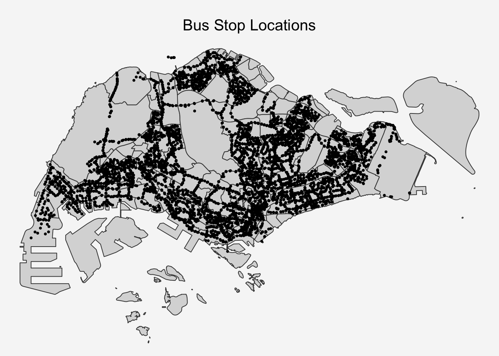
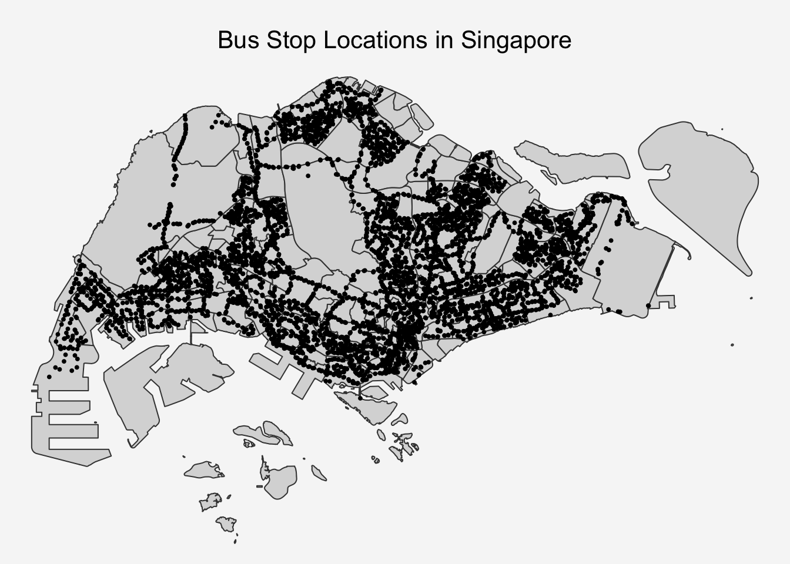
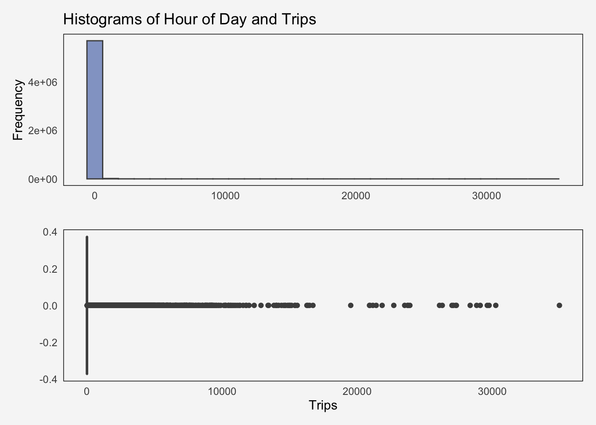
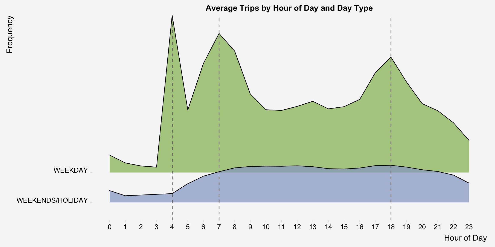
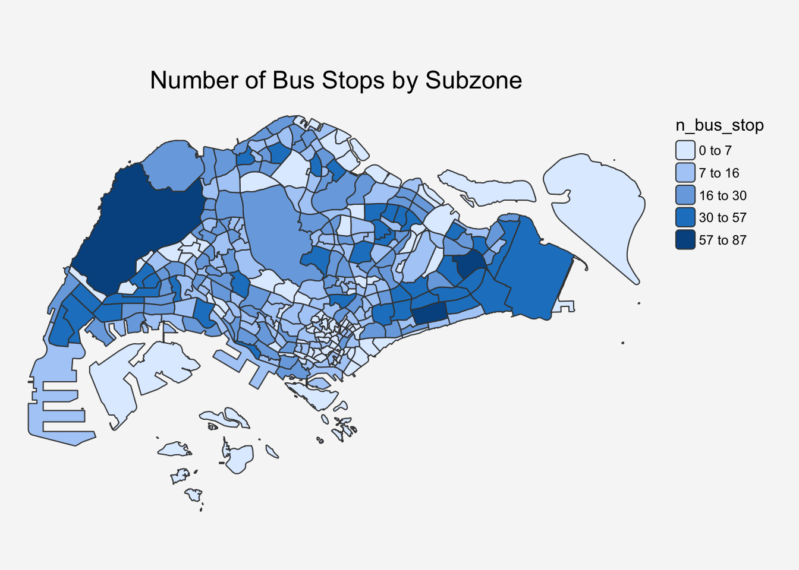
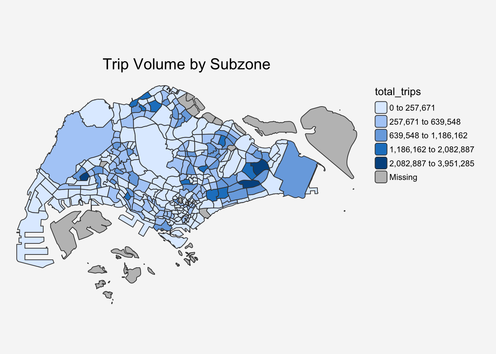
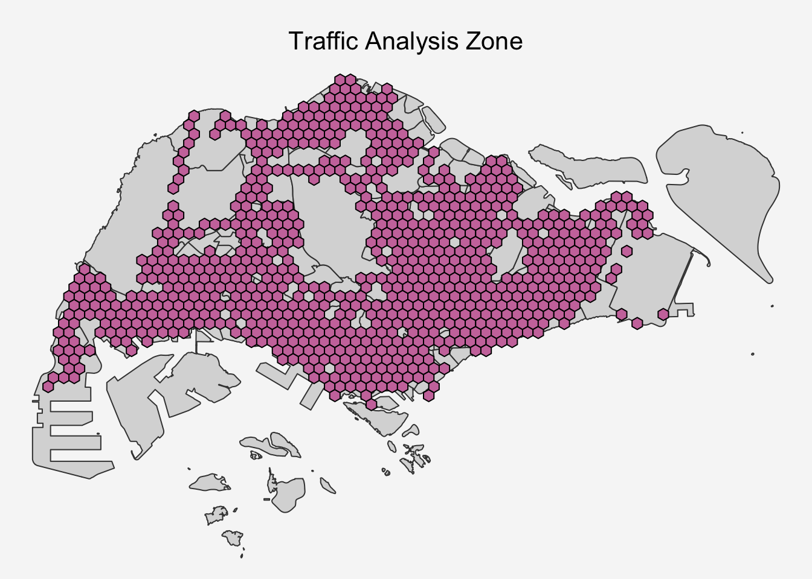
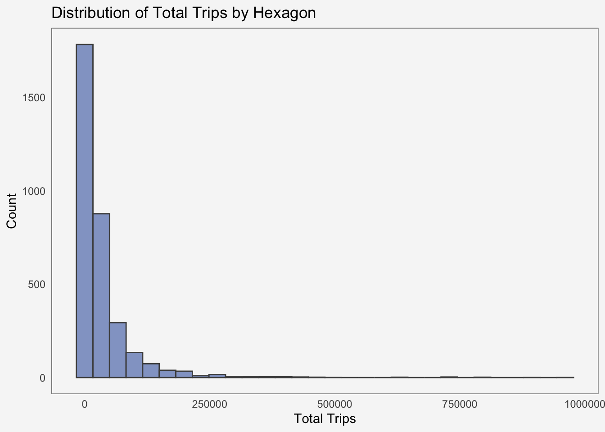
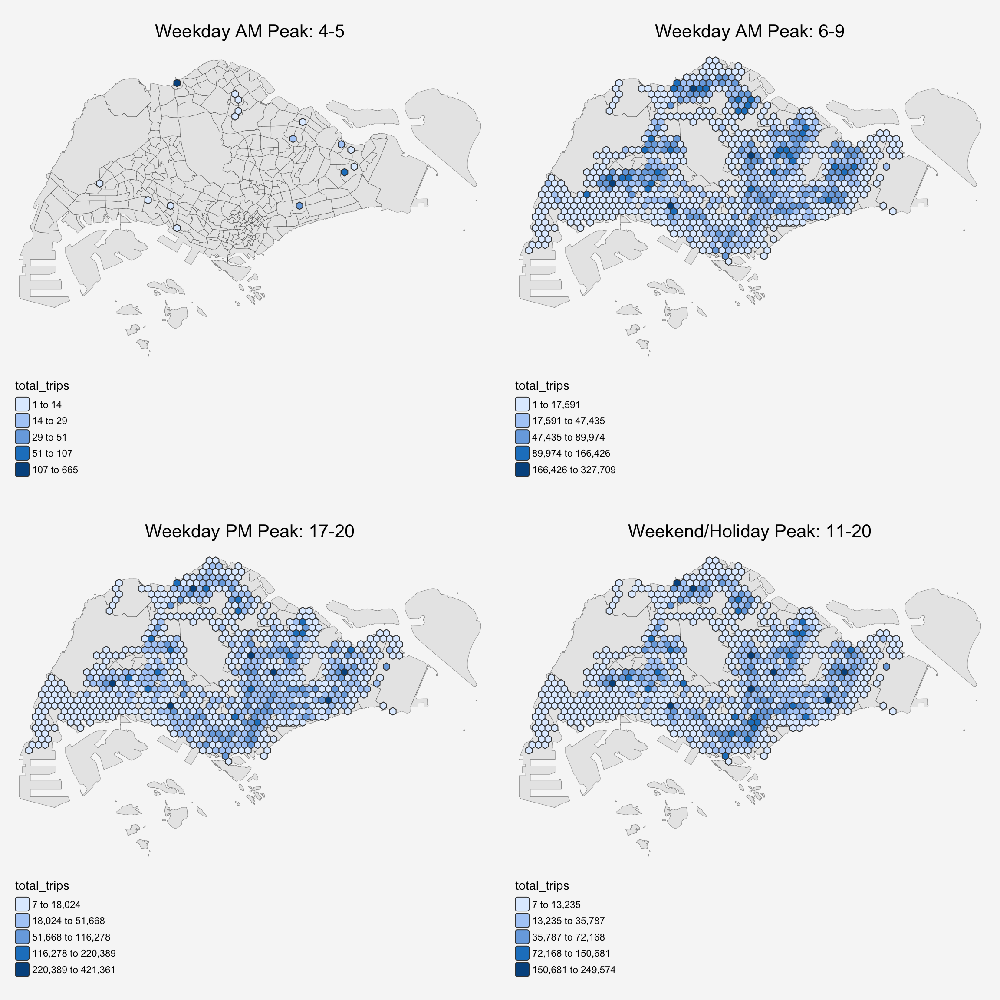

pacman::p_load(sf, tmap, tidyverse, knitr,
sfdep, ggplot2, Kendall, plotly, patchwork,
ggridges)Take-home Ex02: Geospatial Analytics for Public Good
1 Set the Scene
The locations of businesses and firms are central to urban development, influencing economic growth, job creation, and the availability of resources and services for residents and other businesses. Strategic locations provide competitive advantages, access to talent and infrastructure, and impact brand image and market positioning, while also shaping the city’s overall character and functionality by fostering specialized districts and facilitating efficient supply chains and employee commutes.
Studying the spatio-temporal patterns of businesses and firms is crucial for urban development because it reveals how economic activity and urban forms evolve, enabling better urban planning, promoting sustainability, identifying urban inefficiencies, and enhancing quality of life. By understanding where and when businesses locate and operate, urban planners can design cities more effectively, anticipate growth, ensure resource efficiency, and tailor infrastructure to support economic vitality and community well-being.
2 Objective
Utilize Local Measures of Spatial Autocorrelation (LMSA) and Emerging Hot Spot Analysis (EHSA):
- To discover how bus mobility patterns differ across neighborhoods, providing deeper insights than global summary measures.
- To detect emerging patterns in urban mobility, helping planners anticipate commuting demands and design more responsive bus services and policies.
3 Tasks
3.1 Geospatial Data Science
Derive an analytical hexagon data of 375m (this distance is the perpendicular distance between the centre of the hexagon and its edges) to represent the traffic analysis zone (TAZ).
With reference to the time intervals provided in the table below, compute the passenger trips generated by origin at the hexagon level.
Peak hour period Bus tap on time Weekday morning peak 6am to 9am Weekday afternoon peak 5pm to 8pm Weekend/holiday 11am to 8pm Display the geographical distribution of the passenger trips by using appropriate geovisualisation methods,
Describe the spatial patterns revealed by the geovisualisation (not more than 200 words per visual).
3.2 LMSA Analysis
- Compute LMSA statistic of the passengers trips generate by origin at hexagon level.
- Display the LMSA maps of the passengers trips generate by origin at hexagon level. The maps should only display the significant (i.e. p-value < 0.05)
- With reference to the analysis results, draw statistical conclusions (not more than 200 words per visual).
3.3 EHSA Analysis
With reference to the passenger trips by origin at the hexagon level for the three time intervals given above:
- Perform Mann-Kendall Test by using the spatio-temporal local Gi* values,
- Prepared EHSA maps of the Gi* values of the passenger trips by origin at the hexagon level. The maps should only display the significant (i.e. p-value < 0.05).
- With reference to the EHSA maps and data visualisation prepared, describe the spatial patterns reveled. (not more than 250 words per cluster).
4 The Data
In this exercise, 3 datasets will be used:
Aspatial: Passenger Volume by Origin Destination Bus Stops from LTA DataMall
This dataset contains ridership information (datetime, total trips) showing the flow of passengers between bus stops across Singapore’s public bus network.
Geospatial: Bus Stop Location from LTA DataMall
This dataset provides the geographical coordinates and attributes of all bus stops in Singapore.
Geospatial: Master Plan 2019 Subzone Boundary (No Sea) from data.gov.sg
This dataset contains polygon boundaries of Singapore’s planning subzones as defined in the Urban Redevelopment Authority’s (URA) Master Plan 2019.
5 Download and Load the Packages
We first use p_load of pacman to download and load the revelent packages:
| Library | Desc |
|---|---|
| sf | Handling geospatial data in R with support for simple features (points, lines, polygons) |
| tmap | Creating thematic maps and visualization for geospatial data |
| tidyverse | A collection of packages for data manipulation and analysis, including readr (reading data), tidyr (tidying data), and dplyr (transforming data) |
| knitr | Generating elegant, flexible and fast dynamic reports that integrate code and output |
| sfdep | Creating spatial weights matrix objects from polygon contiguities for spatial dependence analysis |
| Kendall | Computes the Kendall rank correlation and Mann-Kendall trend test |
| ggplot2 | Creating sophisticated data visualizations using the grammar of graphics approach |
| plotly | Building interactive web-based graphs and visualizations |
| patchwork | Combining multiple ggplot2 plots into a single composition with flexible layout control |
6 Import & Prepare Data
6.1 Import and Transform Geospatial Data
We first import Master Plan 2019 Subzone Boundary using read_rds() function, and then check its coordinate reference system (CRS) using st_crs():
mpsz19 <- read_rds("data/rds/mpsz.rds")
st_crs(mpsz19)Coordinate Reference System:
User input: EPSG:3414
wkt:
PROJCRS["SVY21 / Singapore TM",
BASEGEOGCRS["SVY21",
DATUM["SVY21",
ELLIPSOID["WGS 84",6378137,298.257223563,
LENGTHUNIT["metre",1]]],
PRIMEM["Greenwich",0,
ANGLEUNIT["degree",0.0174532925199433]],
ID["EPSG",4757]],
CONVERSION["Singapore Transverse Mercator",
METHOD["Transverse Mercator",
ID["EPSG",9807]],
PARAMETER["Latitude of natural origin",1.36666666666667,
ANGLEUNIT["degree",0.0174532925199433],
ID["EPSG",8801]],
PARAMETER["Longitude of natural origin",103.833333333333,
ANGLEUNIT["degree",0.0174532925199433],
ID["EPSG",8802]],
PARAMETER["Scale factor at natural origin",1,
SCALEUNIT["unity",1],
ID["EPSG",8805]],
PARAMETER["False easting",28001.642,
LENGTHUNIT["metre",1],
ID["EPSG",8806]],
PARAMETER["False northing",38744.572,
LENGTHUNIT["metre",1],
ID["EPSG",8807]]],
CS[Cartesian,2],
AXIS["northing (N)",north,
ORDER[1],
LENGTHUNIT["metre",1]],
AXIS["easting (E)",east,
ORDER[2],
LENGTHUNIT["metre",1]],
USAGE[
SCOPE["Cadastre, engineering survey, topographic mapping."],
AREA["Singapore - onshore and offshore."],
BBOX[1.13,103.59,1.47,104.07]],
ID["EPSG",3414]]The result indicates that the MPSZ19 data is already in the SVY21 coordinate system (EPSG:3414), so no further adjustment is needed.
Next, we import Bus Stop Location Data using st_read() of sf package and transform the EPSG from 9001 to 3414.
BusStop <- st_read(dsn = "data/LTADataMall",
layer = "BusStop") %>%
st_transform(crs = 3414)Reading layer `BusStop' from data source
`/Users/johsuan/johsuanh/ISSS626-GAA/Take-home/Take-home-Ex2/data/LTADataMall'
using driver `ESRI Shapefile'
Simple feature collection with 5172 features and 2 fields
Geometry type: POINT
Dimension: XY
Bounding box: xmin: 3970.122 ymin: 26482.1 xmax: 48285.52 ymax: 52983.82
Projected CRS: SVY21Next, we plot the bus stop locations using tmap before proceeding with further analysis:
tm_shape(mpsz19)+
tm_polygons()+
tm_shape(BusStop)+
tm_dots(size = 0.2)+
tm_layout(bg.color = "#f6f6f6",frame = FALSE)+
tm_legend(frame = FALSE)+
tm_title("Bus Stop Locations",
position = tm_pos_out("center", "top", "center"))
As shown in the map, a few bus stops are located outside Singapore, likely near the Johor Bahru checkpoint in Malaysia. Since our analysis focuses on bus stops within Singapore, these bus stops will be removed from the study area.
The code below uses st_join() of sf package to clip the study area within SG:
BS_SG <- st_join(BusStop,mpsz19,
join = st_within, left = FALSE)Let’s plot the map and check it again:
tm_shape(mpsz19)+
tm_polygons()+
tm_shape(BS_SG)+
tm_dots(size = 0.2)+
tm_layout(bg.color = "#f6f6f6",frame = FALSE)+
tm_legend(frame = FALSE)+
tm_title("Bus Stop Locations in Singapore",
position = tm_pos_out("center", "top", "center"))
Now, we can confirm the bus stops located outside of Singapore are all removed.
6.2 Import and Prepare Aspatial Data
The code below use read_csv to import the lastest Aug 2025 bus trip data:
odbus <- read_csv("data/LTADataMall/origin_destination_bus_202509.csv")We first view the data and check its data structure:
kable(head(odbus))| YEAR_MONTH | DAY_TYPE | TIME_PER_HOUR | PT_TYPE | ORIGIN_PT_CODE | DESTINATION_PT_CODE | TOTAL_TRIPS |
|---|---|---|---|---|---|---|
| 2025-09 | WEEKDAY | 13 | BUS | 59259 | 65439 | 2 |
| 2025-09 | WEEKDAY | 18 | BUS | 71069 | 58991 | 2 |
| 2025-09 | WEEKDAY | 6 | BUS | 40441 | 43429 | 1 |
| 2025-09 | WEEKDAY | 23 | BUS | 17141 | 20011 | 5 |
| 2025-09 | WEEKDAY | 17 | BUS | 10018 | 80009 | 1 |
| 2025-09 | WEEKDAY | 20 | BUS | 16029 | 15229 | 6 |
str(odbus)spc_tbl_ [5,707,191 × 7] (S3: spec_tbl_df/tbl_df/tbl/data.frame)
$ YEAR_MONTH : chr [1:5707191] "2025-09" "2025-09" "2025-09" "2025-09" ...
$ DAY_TYPE : chr [1:5707191] "WEEKDAY" "WEEKDAY" "WEEKDAY" "WEEKDAY" ...
$ TIME_PER_HOUR : num [1:5707191] 13 18 6 23 17 20 11 23 11 12 ...
$ PT_TYPE : chr [1:5707191] "BUS" "BUS" "BUS" "BUS" ...
$ ORIGIN_PT_CODE : chr [1:5707191] "59259" "71069" "40441" "17141" ...
$ DESTINATION_PT_CODE: chr [1:5707191] "65439" "58991" "43429" "20011" ...
$ TOTAL_TRIPS : num [1:5707191] 2 2 1 5 1 6 3 2 19 1 ...
- attr(*, "spec")=
.. cols(
.. YEAR_MONTH = col_character(),
.. DAY_TYPE = col_character(),
.. TIME_PER_HOUR = col_double(),
.. PT_TYPE = col_character(),
.. ORIGIN_PT_CODE = col_character(),
.. DESTINATION_PT_CODE = col_character(),
.. TOTAL_TRIPS = col_double()
.. )
- attr(*, "problems")=<externalptr> As shown in the summary above, this dataset contains 5,701,191 observations and 7 attributes. Although ORIGIN_PT_CODE and DESTINATION_PT_CODE are already in character format, we need to verify that each bus stop code consists of five digits.
6.2.1 Aspatial Data Preperation
We first check if all bus stop codes are 5-digit using nchar() - number of char:
all(nchar(odbus$ORIGIN_PT_CODE))[1] TRUEall(nchar(odbus$DESTINATION_PT_CODE))[1] TRUEThe results indicate that all the numbers are 5 digits long, as they return the value “True”.
The code below renames the attributes for easier reference and combine data later and converts “BUS_STOP_N” into factor for further analysis:
trips <- odbus %>%
select(-"YEAR_MONTH",-"PT_TYPE") %>%
rename("BUS_STOP_N" = ORIGIN_PT_CODE) %>%
rename("Day_Type" = DAY_TYPE) %>%
rename("Hour" = TIME_PER_HOUR) %>%
rename("Trips" = TOTAL_TRIPS)
#mutate("BUS_STOP_N" = as.factor("BUS_STOP_N"))
kable(head(trips))| Day_Type | Hour | BUS_STOP_N | DESTINATION_PT_CODE | Trips |
|---|---|---|---|---|
| WEEKDAY | 13 | 59259 | 65439 | 2 |
| WEEKDAY | 18 | 71069 | 58991 | 2 |
| WEEKDAY | 6 | 40441 | 43429 | 1 |
| WEEKDAY | 23 | 17141 | 20011 | 5 |
| WEEKDAY | 17 | 10018 | 80009 | 1 |
| WEEKDAY | 20 | 16029 | 15229 | 6 |
Lastly, let’s check the data summary
summary(trips) Day_Type Hour BUS_STOP_N DESTINATION_PT_CODE
Length:5707191 Min. : 0.00 Length:5707191 Length:5707191
Class :character 1st Qu.:10.00 Class :character Class :character
Mode :character Median :14.00 Mode :character Mode :character
Mean :14.03
3rd Qu.:18.00
Max. :23.00
Trips
Min. : 1.00
1st Qu.: 2.00
Median : 4.00
Mean : 20.13
3rd Qu.: 12.00
Max. :34967.00 7 EDA of Bus Routes data
7.1 Trips Distribution
Let’s visualize the data to understand trips distribution through out Sep 2025:

hist <- ggplot(trips, aes(x = Trips)) +
geom_histogram(bins = 30, fill = "#93A4CC", color = "grey30") +
labs(title = "Histograms of Hour of Day and Trips",
x = "", y = "Frequency") +
theme_minimal()+
theme(panel.background = element_rect(fill = "#f6f6f6"),
plot.background = element_rect(fill = "#f6f6f6",color = NA),
panel.grid = element_blank())
box <- ggplot(data=trips,aes(x=Trips))+
geom_boxplot(color="grey30",fill="#93A4CC")+
labs(
x = "Trips", y = "") +
theme_minimal()+
theme(panel.background = element_rect(fill = "#f6f6f6"),
plot.background = element_rect(fill = "#f6f6f6",color = NA),
panel.grid = element_blank())
hist/box +
plot_annotation(theme = theme(
plot.background = element_rect(color= '#f6f6f6', linewidth = 0, fill ="#f6f6f6")))
Observation
The distribution of trips is noticeably left-skewed, suggesting that certain bus routes experience a high concentration of activity during specific hours.
7.2 Average Trips Distribution by Day of Hour and Day Type
Next, let’s check the distribution of trips by hour of day and day type. Before visualization, we need to summarize the average trips by Day_Type and hour first:
trips_summary <- trips %>%
group_by(Day_Type, Hour) %>%
summarise(avg_trips = mean(Trips, na.rm = TRUE),.groups = "drop")
trips_summary$Day_Type <- factor(trips_summary$Day_Type, levels = c("WEEKENDS/HOLIDAY","WEEKDAY"))
ggplot(trips_summary, aes(x = Hour, y=Day_Type, fill = Day_Type, height = avg_trips,
group = Day_Type)) +
geom_ridgeline(scale = 0.1,
alpha = 0.7) +
scale_x_continuous(breaks = seq(0, 23, 1)) +
scale_fill_manual(values = c("#93A4CC", "#8EB859"))+
labs(
title = "Averafe Trips by Hour of Day and Day Type",
x = "Hour of Day",
y = "Frequency"
) +
geom_vline(xintercept = c(4, 7, 18), color = "grey30",
linetype = "dashed", linewidth = 0.6) +
theme_ridges()+
theme(
legend.position = "none",
plot.title = element_text(hjust = 0.5),
panel.background = element_rect(fill = "#f6f6f6"),
plot.background = element_rect(fill = "#f6f6f6", color = NA),
panel.grid = element_blank(),
)
Observation
On weekdays, three distinct peak periods in bus usage are observed: 04:00 - 05:00 AM, 07:00–08:00 AM, and 18:00–19:00 PM. These peaks are likely driven by commuter traffic, particularly workers traveling to and from their workplaces. (The 4 AM peak is largely due to trips originating from JB into SG, for details, please refer to 8.5 Visualize Total Trips by Hexagon)
During weekends and holidays, the distribution of trips is more flattened throughout the day, with a consistent average number of trips between 07:00 and 19:00.
7.3 Number of Bus Stop by Subzone
mpsz19$n_bus_stop <-
lengths(st_intersects(mpsz19, BS_SG))
tm_shape(mpsz19)+
tm_polygons(fill = "n_bus_stop",
fill.scale = tm_scale_intervals(style = "jenks",
n=5))+
tm_layout(frame = FALSE,
bg.color = "#f6f6f6")+
tm_legend(frame = FALSE)+
tm_title("Number of Bus Stops by Subzone",
position = tm_pos_out("center", "top", "center"))
Observation
As shown on the map, Murai (87 bus stops), Tampines East (85), and Frankel (80) are the three subzones with the highest number of bus stops.
7.4 Trips Volume by Subzone
To examine trip volumes by subzone, we first aggregate the number of trips by bus stop location and then perform a left join with the mpsz19 sf data for plotting:
BS_SG_joined <- BS_SG %>%
left_join(trips, by = "BUS_STOP_N")
BS_SG_sz <- BS_SG_joined %>%
st_drop_geometry() %>% # cos we need to combine data to mpsz
select(c("SUBZONE_C","Trips")) %>%
group_by(SUBZONE_C) %>%
summarise(total_trips = sum(Trips, na.rm = TRUE))
mpsz19 <- mpsz19 %>% left_join(BS_SG_sz,by = "SUBZONE_C")
tm_shape(mpsz19)+
tm_polygons(fill = "total_trips",
fill.scale = tm_scale_intervals(style = "jenks",
n=5))+
tm_layout(frame = FALSE,
bg.color = "#f6f6f6")+
tm_legend(frame = FALSE)+
tm_title("Trip Volume by Subzone",
position = tm_pos_out("center", "top", "center"))Let’s print the top 10 subzones with highest trip volume for reference:
Top_10_SZ <- mpsz19 %>%
arrange(desc(total_trips), desc(n_bus_stop)) %>%
slice(1:10)
kable(Top_10_SZ)| REGION_N | PLN_AREA_N | SUBZONE_N | SUBZONE_C | n_bus_stop | total_trips | geometry |
|---|---|---|---|---|---|---|
| EAST REGION | TAMPINES | TAMPINES EAST | TMSZ02 | 85 | 3951285 | MULTIPOLYGON (((42196.76 38… |
| WEST REGION | JURONG WEST | JURONG WEST CENTRAL | JWSZ09 | 36 | 2633606 | MULTIPOLYGON (((13673.08 35… |
| EAST REGION | BEDOK | BEDOK NORTH | BDSZ04 | 56 | 2558412 | MULTIPOLYGON (((40284.24 35… |
| NORTH REGION | WOODLANDS | WOODLANDS REGIONAL CENTRE | WDSZ01 | 9 | 2082887 | MULTIPOLYGON (((22734.02 46… |
| NORTH REGION | WOODLANDS | NORTH COAST | WDSZ09 | 18 | 1730359 | MULTIPOLYGON (((23491.93 49… |
| CENTRAL REGION | GEYLANG | ALJUNIED | GLSZ04 | 45 | 1641138 | MULTIPOLYGON (((34449.13 33… |
| EAST REGION | TAMPINES | TAMPINES WEST | TMSZ03 | 55 | 1531083 | MULTIPOLYGON (((40632.19 35… |
| NORTH-EAST REGION | SENGKANG | SENGKANG TOWN CENTRE | SESZ03 | 35 | 1485037 | MULTIPOLYGON (((35615.75 40… |
| NORTH REGION | WOODLANDS | WOODLANDS EAST | WDSZ03 | 51 | 1415939 | MULTIPOLYGON (((24786.75 46… |
| NORTH-EAST REGION | SERANGOON | SERANGOON CENTRAL | SGSZ06 | 24 | 1386907 | MULTIPOLYGON (((32777.72 37… |
Observation
Tampines East appears on the list again, indicating that it has both a high number of bus stops and significant traffic volume. Observing the other subzones on the list, most contain major bus interchanges, suggesting that these areas serve as key transit hubs.
8 Derive and Visualize Analytical Hexagons
One of the task is to derive an analytical hexagon data of 375m (this distance is the perpendicular distance between the centre of the hexagon and its edges) to represent the traffic analysis zone (TAZ).
According to the documentation, the cell size of hexagonal cells refers to the distance between opposite edges. Therefore, the cell size in this case is 750 m.
The code below uses st_make_grid() to dervie the hexagon for TAZ:
hexagon <- st_make_grid(mpsz19,
cellsize = 750,
what = "polygon",
square = FALSE) %>%
st_sf()
hexagonSimple feature collection with 3942 features and 0 fields
Geometry type: POLYGON
Dimension: XY
Bounding box: xmin: 1917.538 ymin: 15315.71 xmax: 57042.54 ymax: 50606.24
Projected CRS: SVY21 / Singapore TM
First 10 features:
geometry
1 POLYGON ((2292.538 15965.23...
2 POLYGON ((2292.538 17264.27...
3 POLYGON ((2292.538 18563.3,...
4 POLYGON ((2292.538 19862.34...
5 POLYGON ((2292.538 21161.38...
6 POLYGON ((2292.538 22460.42...
7 POLYGON ((2292.538 23759.46...
8 POLYGON ((2292.538 25058.49...
9 POLYGON ((2292.538 26357.53...
10 POLYGON ((2292.538 27656.57...kable(head(hexagon))| geometry |
|---|
| POLYGON ((2292.538 15965.23… |
| POLYGON ((2292.538 17264.27… |
| POLYGON ((2292.538 18563.3,… |
| POLYGON ((2292.538 19862.34… |
| POLYGON ((2292.538 21161.38… |
| POLYGON ((2292.538 22460.42… |
Notice that the hexagon contains only one column with polygon geometry, lacking an unique ID. We need to map the hexagons with bus stops:
hexagon$n_collisions <-
lengths(st_intersects(hexagon, BS_SG))
kable(head(hexagon))| geometry | n_collisions |
|---|---|
| POLYGON ((2292.538 15965.23… | 0 |
| POLYGON ((2292.538 17264.27… | 0 |
| POLYGON ((2292.538 18563.3,… | 0 |
| POLYGON ((2292.538 19862.34… | 0 |
| POLYGON ((2292.538 21161.38… | 0 |
| POLYGON ((2292.538 22460.42… | 0 |
8.1 Filter Hexagons for Study Area
Next, we filter n_collisions greater than 0 for the study area:
hexagon <- filter(hexagon,n_collisions>0)
count(hexagon)Simple feature collection with 1 feature and 1 field
Geometry type: MULTIPOLYGON
Dimension: XY
Bounding box: xmin: 3417.538 ymin: 26357.53 xmax: 48417.54 ymax: 50606.24
Projected CRS: SVY21 / Singapore TM
n geometry
1 834 MULTIPOLYGON (((4542.538 29...There are total 834 hexagon as our study area.
8.2 Assign IDs to Each Hexagon
We need an unique identifier for each hexagon for reference. The code below defines and assigns new ID formatting in Hxxx for each hexagon:
hexagon <- hexagon %>%
select(,-n_collisions) # "-" means drop the n_collisions column
hexagon$HEX_ID <- sprintf(
"H%04d", seq_len(nrow(hexagon))) %>%
as.factor()Next, we plot our study area using tmap:
tm_shape(mpsz19)+
tm_polygons()+
tm_shape(hexagon)+
tm_fill(col= "black",fill="#cc78aa")+
tm_layout(bg.color = "#f6f6f6",frame = FALSE)+
tm_legend(frame = FALSE)+
tm_title("Traffic Analysis Zone",
position = tm_pos_out("center", "top", "center"))
8.3 Combine Hexagon ID with Trip Data
We first map Bus Stop code with Hexagon ID:
bus_hex <- st_intersection(
BS_SG, hexagon) %>%
st_drop_geometry() %>%
select(c(BUS_STOP_N, HEX_ID))%>%
distinct(BUS_STOP_N, .keep_all = TRUE)
kable(head(bus_hex))| BUS_STOP_N | HEX_ID |
|---|---|
| 25059 | H0001 |
| 25751 | H0002 |
| 26379 | H0003 |
| 26299 | H0004 |
| 25761 | H0005 |
| 26399 | H0006 |
Next, we use inner_join() to include the trips data within hexagon study areas:
trips <- trips %>%
inner_join(bus_hex, by = "BUS_STOP_N")8.4 Compute Total Trips by Peak Hour Period and Hexagon
Following the task instructions, the peak variable was created using the mutate() and case_when() functions. However, based on the earlier EDA, where a peak was also observed between 4 AM and 5 AM, this time period has been included as part of the peak definition.
trips <- trips %>%
mutate(
peak = case_when(
Day_Type == "WEEKDAY" & Hour >= 4 & Hour < 5 ~ "Weekday 4 AM Peak",
Day_Type == "WEEKDAY" & Hour >= 6 & Hour < 9 ~ "Weekday AM Peak",
Day_Type == "WEEKDAY" & Hour >= 17 & Hour < 20 ~ "Weekday PM Peak",
Day_Type == "WEEKENDS/HOLIDAY" & Hour >= 11 & Hour < 20 ~ "Weekend/Holiday Peak",
TRUE ~ "Off Peak"
)
)Next, we sum up the total trips by HEX_ID and Peak hour period:
trips_summary_hex <- trips %>%
group_by(HEX_ID, peak) %>%
summarise(total_trips = sum(Trips, na.rm = TRUE), .groups = "drop") %>% # drop grouping here
left_join(hexagon, by = "HEX_ID")%>%
st_sf()8.5 Visualize Total Trips by Hexagon
ggplot(data = trips_summary_hex) +
geom_histogram(aes(x = total_trips), bins = 30, fill = "#93A4CC", color = "grey30") +
labs(
title = "Distribution of Total Trips by Hexagon",
x = "Total Trips",
y = "Count"
) +
theme_minimal()+
theme(panel.background = element_rect(fill = "#f6f6f6"),
plot.background = element_rect(fill = "#f6f6f6",color = NA),
panel.grid = element_blank())
Since the total trips during peak hours are still fairly left-skewed, we use “jenks” natural break method to highlight areas with disproportionately high values:

WD_4AM <- tm_shape(mpsz19)+
tm_polygons(fill_alpha = 0.5,lwd =0.5,col_alpha=0.5)+
tm_shape(trips_summary_hex %>% filter (peak=="Weekday 4 AM Peak"))+
tm_polygons(fill = "total_trips",
fill.scale = tm_scale_intervals(style = "jenks",
n=5))+
tm_layout(frame = FALSE,
bg.color = "#f6f6f6")+
tm_legend(frame = FALSE)+
tm_title("Weekday AM Peak: 4-5",
position = tm_pos_out("center", "top", "center"))
WK <- tm_shape(mpsz19)+
tm_polygons(fill_alpha = 0.5,lwd =0.5,col_alpha=0.5)+
tm_shape(trips_summary_hex %>% filter (peak=="Weekend/Holiday Peak"))+
tm_polygons(fill = "total_trips",
fill.scale = tm_scale_intervals(style = "jenks",
n=5))+
tm_layout(frame = FALSE,
bg.color = "#f6f6f6")+
tm_legend(frame = FALSE)+
tm_title("Weekend/Holiday Peak: 11-20",
position = tm_pos_out("center", "top", "center"))
WD_AM <- tm_shape(mpsz19)+
tm_polygons(fill_alpha = 0.5,lwd =0.5,col_alpha=0.5)+
tm_shape(trips_summary_hex %>% filter (peak=="Weekday AM Peak"))+
tm_polygons(fill = "total_trips",
fill.scale = tm_scale_intervals(style = "jenks",
n=5))+
tm_layout(frame = FALSE,
bg.color = "#f6f6f6")+
tm_legend(frame = FALSE)+
tm_title("Weekday AM Peak: 6-9",
position = tm_pos_out("center", "top", "center"))
WD_PM <- tm_shape(mpsz19)+
tm_polygons(fill_alpha = 0.5,lwd =0.5,col_alpha=0.5)+
tm_shape(trips_summary_hex %>% filter (peak=="Weekday PM Peak"))+
tm_polygons(fill = "total_trips",
fill.scale = tm_scale_intervals(style = "jenks",
n=5))+
tm_layout(frame = FALSE,
bg.color = "#f6f6f6")+
tm_legend(frame = FALSE)+
tm_title("Weekday PM Peak: 17-20",
position = tm_pos_out("center", "top", "center"))
tmap_arrange(WD_4AM,WD_AM, WD_PM,WK,ncol = 2,nrow=2)Next, let’s list out the top 5 Hexagon during each peak period:
trips_summary_hex <- st_join(trips_summary_hex,mpsz19,
join = st_within, left = FALSE)kable(
trips_summary_hex %>%
filter(peak %in% c("Weekday AM Peak", "Weekday PM Peak", "Weekend/Holiday Peak")) %>%
group_by(peak) %>%
slice_max(order_by = total_trips.x, n = 5, with_ties = FALSE) %>%
ungroup() %>%
select(HEX_ID, SUBZONE_N, peak, total_trips.x) %>%
arrange(peak, desc(total_trips.x))
)| HEX_ID | SUBZONE_N | peak | total_trips.x | geometry |
|---|---|---|---|---|
| H0110 | JURONG WEST CENTRAL | Weekday AM Peak | 327709 | POLYGON ((13542.54 35450.8,… |
| H0768 | TAMPINES EAST | Weekday AM Peak | 147727 | POLYGON ((40542.54 36749.84… |
| H0787 | TAMPINES EAST | Weekday AM Peak | 135690 | POLYGON ((41667.54 37399.36… |
| H0350 | WOODLANDS EAST | Weekday AM Peak | 101815 | POLYGON ((24417.54 46492.62… |
| H0400 | SEMBAWANG CENTRAL | Weekday AM Peak | 89974 | POLYGON ((26292.54 47142.14… |
| H0110 | JURONG WEST CENTRAL | Weekday PM Peak | 421361 | POLYGON ((13542.54 35450.8,… |
| H0768 | TAMPINES EAST | Weekday PM Peak | 345191 | POLYGON ((40542.54 36749.84… |
| H0350 | WOODLANDS EAST | Weekday PM Peak | 122255 | POLYGON ((24417.54 46492.62… |
| H0787 | TAMPINES EAST | Weekday PM Peak | 115514 | POLYGON ((41667.54 37399.36… |
| H0400 | SEMBAWANG CENTRAL | Weekday PM Peak | 105086 | POLYGON ((26292.54 47142.14… |
| H0110 | JURONG WEST CENTRAL | Weekend/Holiday Peak | 249574 | POLYGON ((13542.54 35450.8,… |
| H0768 | TAMPINES EAST | Weekend/Holiday Peak | 220168 | POLYGON ((40542.54 36749.84… |
| H0667 | GEYLANG EAST | Weekend/Holiday Peak | 68603 | POLYGON ((35292.54 32852.72… |
| H0350 | WOODLANDS EAST | Weekend/Holiday Peak | 67805 | POLYGON ((24417.54 46492.62… |
| H0400 | SEMBAWANG CENTRAL | Weekend/Holiday Peak | 65968 | POLYGON ((26292.54 47142.14… |
Observation
According to The Stait Time, starting from Sep 15, the first buses of four Singapore-operated services departing from the Johor Bahru checkpoint to Woodlands on weekdays will begin operations earlier at 4:50 AM to help alleviate early morning traffic congestion at the Causeway.
Since the plot above only includes bus trips originating from SG, it only partially reflects the early morning peak observed in the previous visualizations. Most buses operating around 4 AM originate from the JB checkpoint rather than from within Singapore.
During both regular weekday and weekend peak hours, the busiest areas based on total trips are hexagons H0110, H0768, H0350, and H0400. These are located in the westernmost (Jurong West Central), easternmost (Tampines East), and northernmost regions (Sembawang Central and Woodlands East). Notably, H0667 (Geylang East) ranks as the third busiest area during weekend and holiday peak hours. In these areas, commuters are more likely to rely on buses due to limited or absent train service.
9 LMSA Analysis - HCSA
To support the LMSA analysis, Hot Spot/Cold Spot analysis (HCSA) based on the Getis-Ord Gi* statistic will be performed.